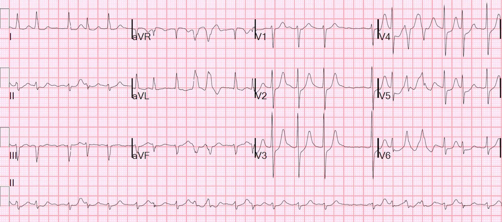
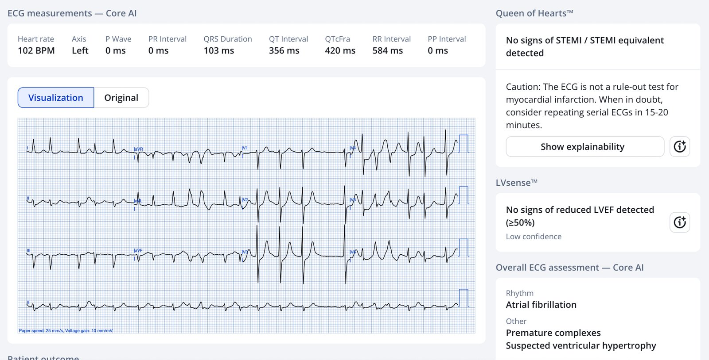
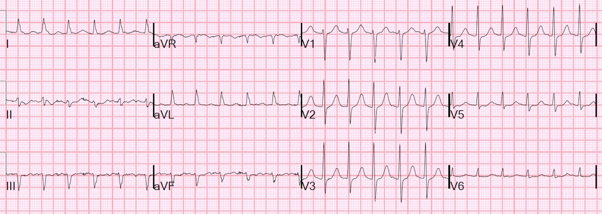
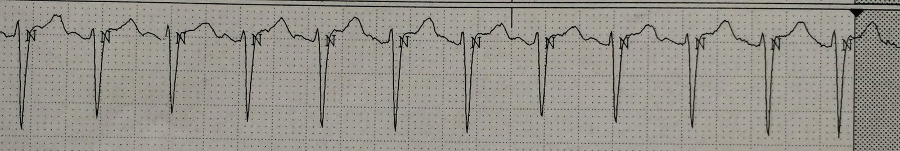
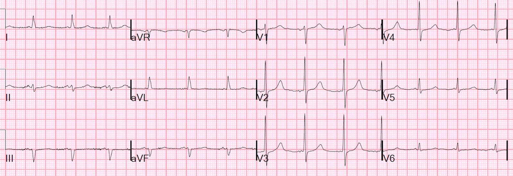
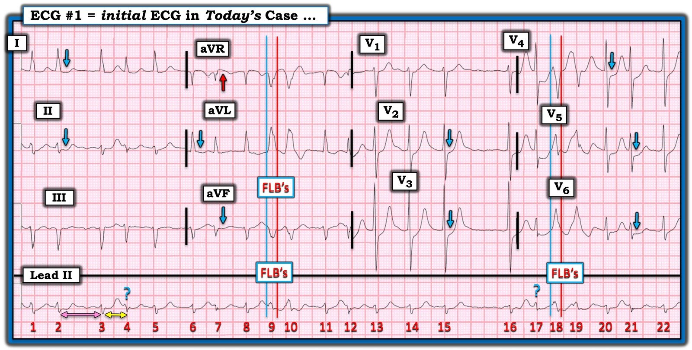
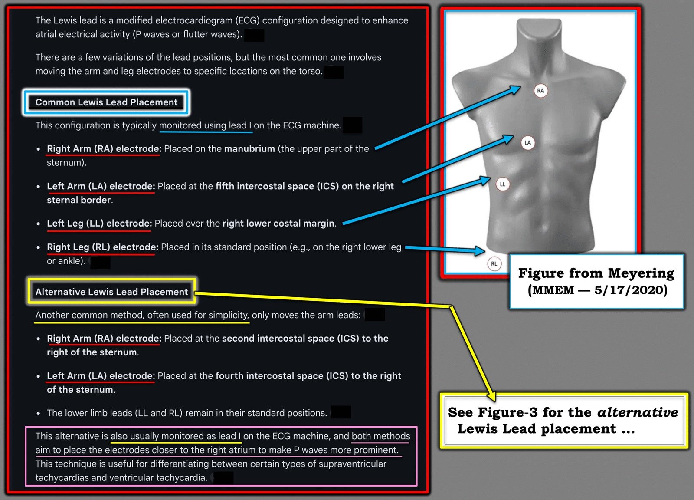
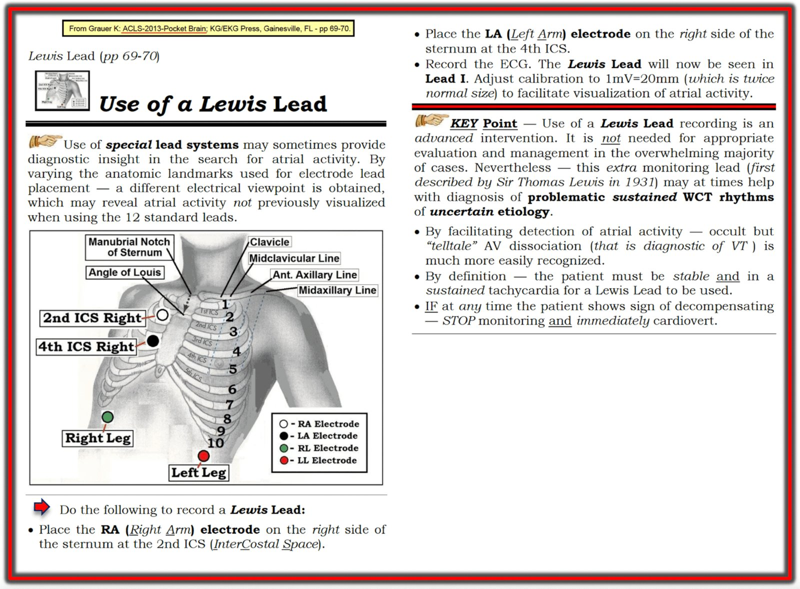

23/11/2025 — Rung nhĩ với đáp ứng thất nhanh và ST chênh xuống: siêu âm tại giường (POCUS), sốc điện chuyển nhịp, chuyển đạo Lewis, và đây có phải OMI thành sau?
Bản dịch tiếng Việt của bài "Atrial fibrillation with RVR and ST depression: POCUS, cardioversion, Lewis leads, and is this Posterior OMI?" – Dr. Smith’s ECG Blog. Giữ nguyên toàn bộ 8 hình ảnh và 4 video của bản gốc.
Một bệnh nhân nam cao tuổi có tiền sử đái tháo đường và tăng huyết áp nhập viện vì lừ đừ, yếu mệt, giảm lượng nước tiểu và tụt huyết áp. Không có tiền sử xuất huyết tiêu hóa hay chảy máu nào khác. Không sốt.
Ông không đau ngực, không khó thở, và không rõ trước đây có tiền sử rung nhĩ hay không. Ông đang dùng atenolol, nhưng không rõ là chỉ để điều trị tăng huyết áp hay để điều trị rung nhĩ.
Ông không dùng thuốc chống đông.
Huyết áp dao động từ 83/45 đến 125/83, thấp hơn bình thường. Tần số tim dao động từ 110 đến 145.
Ông được ghi điện tâm đồ ngay khi đến viện:


Bạn nghĩ sao?
= = =
Có rung nhĩ với đáp ứng thất nhanh (rapid ventricular response – RVR) (tần số khoảng 120). Có các nhát dẫn truyền lệch hướng (hiện tượng Ashman – xem phân tích của Ken bên dưới), rất dễ nhầm với các cặp đôi PVC. Có ST chênh xuống ở V2-6, rõ ràng là do thiếu máu cục bộ.
Có phải OMI không?
Thiếu máu cục bộ trên điện tâm đồ có thể do một vài nguyên nhân sau:
- Rung nhĩ mới hoặc cũ kèm OMI thành sau.
- Rung nhĩ mới với RVR gây thiếu máu cục bộ do tăng nhu cầu (nhưng tần số không quá nhanh).
- Rung nhĩ cũ kiểm soát tần số kém gây thiếu máu cục bộ do tăng nhu cầu.
- OMI hoặc ACS gây thiếu máu cục bộ dưới nội tâm mạc, có thể kèm thêm thiếu máu cục bộ do rung nhĩ với RVR
- Xuất huyết/mất nước/nhiễm khuẩn huyết/v.v., kèm rung nhĩ mới hoặc cũ, dẫn đến nhịp nhanh phản xạ và thiếu máu cục bộ do tăng nhu cầu.
ĐIỂM THEN CHỐT (PEARL) từ Smith: mặc dù ST chênh xuống tối đa ở V1-4 có độ đặc hiệu cực cao đối với OMI cấp, nhưng khi có rung nhĩ với RVR thì KHÔNG phải vậy!!
Queen of Hearts của PMCardio có biết đây có phải OMI hay không?= =


Cô ấy cho là không. Điều đó rất thú vị. Cô ấy hiểu rằng trong bối cảnh rung nhĩ với RVR (nhịp nhanh), ST chênh xuống ở V1-V4 nhiều khả năng nhất là thiếu máu cục bộ dưới nội tâm mạc.
Như bạn sẽ thấy dưới đây, hóa ra đây KHÔNG phải OMI, mà là thiếu máu cục bộ dưới nội tâm mạc do mất cân bằng cung-cầu. Queen rất giỏi phát hiện các tình trạng giả OMI, như bài báo này cho thấy. Trong nghiên cứu này, cô ấy đã giảm tỷ lệ kích hoạt dương tính giả từ 42% xuống 8%!! Đồng thời vẫn chẩn đoán được OMI thật trên 92% điện tâm đồ đầu tiên, so với 71% của chăm sóc tiêu chuẩn.
PMcardio for Individuals nay đã có mô hình Queen of Hearts mới nhất, khả năng giải thích của AI (bản đồ nhiệt màu xanh) và %LV phân suất tống máu. Tải ngay cho iOS hoặc Android: https://individuals.pmcardio.com/app/promo?code=DRSMITH20. Là thành viên cộng đồng của chúng tôi, bạn có thể dùng mã DRSMITH20 để được giảm giá độc quyền 20% cho năm đầu tiên của gói thuê bao năm. Tuyên bố miễn trừ: PMcardio đã có chứng nhận CE để lưu hành tại Liên minh châu Âu và Vương quốc Anh. Công nghệ PMcardio chưa được Cục Quản lý Thực phẩm và Dược phẩm Hoa Kỳ (FDA) cấp phép sử dụng lâm sàng tại Hoa Kỳ.
Ca bệnh tiếp diễn
Để tìm ra câu trả lời, nên đánh giá tình trạng thể tích dịch, việc này có thể thực hiện bằng siêu âm:
Siêu âm tại giường được thực hiện ở mặt cắt dưới sườn, tập trung vào tĩnh mạch chủ dưới (IVC). Nếu nguyên nhân thuộc nhóm 1-4, ta sẽ chờ đợi IVC căng đầy. Nếu là nguyên nhân 5, ta sẽ chờ đợi IVC xẹp và/hoặc xẹp theo nhịp thở:
Hình ảnh cho thấy tĩnh mạch chủ dưới (IVC) xẹp, phù hợp với tình trạng giảm thể tích
Một hình khác thấy tim rõ hơn. Thất phải (RV) ở phần trên của khung hình, cạnh gan:
RV khá nhỏ. Thất trái (LV) cũng nhỏ và co bóp khá tốt. Điều này ủng hộ tình trạng giảm thể tích.
Điều trị thích hợp là truyền dịch và thăm dò thêm tìm xuất huyết/mất nước/nhiễm khuẩn huyết/v.v.
Tuy nhiên, CẢ esmolol tiêm bolus và truyền liên tục, lẫn dịch truyền tĩnh mạch đều đã được bắt đầu.
Nhưng KHÔNG nên dùng thuốc chẹn beta, ít nhất là chưa phải lúc này. Trong tình trạng giảm thể tích, bệnh nhân này cần nhịp nhanh phản xạ để duy trì cung lượng tim.
Đến khi tôi tới và tham gia xử trí, esmolol chưa được dùng đủ liều cao để gây hại.
Lactat trả về là 3.3 mEq/L và troponin lần đầu là 0.139 ng/mL. Tôi khá chắc chắn đây là nhồi máu cơ tim típ II (thiếu máu cục bộ do tăng nhu cầu) và bệnh nhân này không bị ACS.
Tôi cho rằng việc hợp lý là không sốc điện chuyển nhịp vì nguy cơ huyết khối thuyên tắc, nhưng còn những lý do khác để không làm: 2) nếu bệnh nhân bị rung nhĩ mạn tính, sốc điện khó có hiệu quả và 3) nguyên nhân gây sốc nhẹ KHÔNG phải là rung nhĩ với RVR, mà là một bệnh lý khác có thể cải thiện ít nhất một phần bằng dịch truyền tĩnh mạch.
Tôi ngừng esmolol và truyền cho bệnh nhân 2 lít dịch. Sau truyền dịch, IVC bớt xẹp hơn:
Tình trạng thể tích lúc này đã tốt hơn, ít nhất là tương đối. Có thể vẫn chưa đủ: khi bệnh nhân bị rung nhĩ, họ thường cần áp lực đổ đầy cao hơn để có cung lượng tim tốt, nên IVC hơi căng một chút sẽ là tốt, miễn là không dẫn đến phù phổi – điều này đánh giá tốt nhất bằng đường B (B-lines).
Không có đường B.
Nhưng sau đó máy theo dõi hiển thị một nhịp nhanh đều không có sóng P. Nói cách khác, đã có chuyển nhịp tự phát từ rung nhĩ sang một nhịp đều QRS hẹp. Tần số rất ổn định ở mức 140, nên tôi tự hỏi đây là SVT hay nhịp nhanh xoang. Một điện tâm đồ 12 chuyển đạo khác được ghi:


Lúc này là một nhịp trên thất đều. Có thể có sóng P, nhưng tôi không hoàn toàn chắc chắn.
Làm gì đây?
Chuyển đạo Lewis (Lewis lead).
= = =
Tôi vào phòng bệnh nhân và, theo hướng dẫn trên LifeintheFastLane, tôi đổi vị trí các điện cực theo dõi (đây không phải điện tâm đồ 12 chuyển đạo!)
- Điện cực Tay phải (RA) đặt trên cán xương ức
- Điện cực Tay trái (LA) đặt ở khoang liên sườn 5, bờ phải xương ức.
- Điện cực Chân trái (LL) đặt ở bờ sườn dưới bên phải.
- Điện cực Chân phải (RL) đặt ở vị trí chuẩn trên chân phải
- Theo dõi chuyển đạo I hoặc II
Tôi in dải nhịp từ máy theo dõi. Đây là những gì tôi ghi được:


Lúc này sóng P đã rõ ràng.
= = =Vậy lúc này bệnh nhân có nhịp nhanh xoang.
Tôi truyền thêm dịch và tần số tim giảm xuống. Đây là điện tâm đồ tiếp theo:


Bình thường.
= = =
Sau đó, troponin I lần hai trả về là 0.562 ng/mL. Khi kết quả lần ba trả về, giá trị là 2.165 ng/mL.
Ông xuất hiện sốt và xét nghiệm nước tiểu có bạch cầu. Ông được điều trị nhiễm khuẩn huyết từ đường tiết niệu và diễn tiến tốt. Ông không bị ACS.
Những điểm cần học:
1. Không phải mọi nhồi máu cơ tim đều do ACS. Đây là nhồi máu cơ tim típ 2. Xem tại đây một bài báo Delphi gần đây về nhồi máu cơ tim típ 2.
2. Thiếu máu cục bộ dưới nội tâm mạc do mất cân bằng cung-cầu trong bối cảnh AF với RVR có thể tối đa ở V1-V4
2. Rung nhĩ với RVR có thể là hậu quả, chứ không phải nguyên nhân, của bệnh lý
3. Tình trạng thể tích dịch có vai trò then chốt trong xử trí rung nhĩ với RVR
4. Nếu bạn không chắc chắn về nguồn gốc của SVT, hãy dùng chuyển đạo Lewis.
= = =
=====================================
BÌNH LUẬN CỦA TÔI, bởi KEN GRAUER, MD (23/11/2025):
Tôi thấy ca hôm nay là một minh chứng bậc thầy của Dr. Smith về những phẩm chất sau:
- — i) Đọc điện tâm đồ tối ưu (tức là Không có OMI cấp — mà là DSI = thiếu máu cục bộ dưới nội tâm mạc lan tỏa (Diffuse Subendocardial Ischemia));
- — ii) Đối chiếu lâm sàng (Bệnh sử gợi ý nhiễm khuẩn huyết/mất nước nhiều hơn hẳn — không hề có đau ngực để gợi ý nhồi máu cơ tim gần đây );
- — iii) Sử dụng tinh tường các phương tiện chẩn đoán sẵn có cho bác sĩ cấp cứu, dù quá thường xuyên không được nghĩ tới (tức là siêu âm tim tại giường để xác nhận giảm thể tích là vấn đề chính, và là yếu tố có thể khởi phát AFib — rồi áp dụng chuyển đạo Lewis để xác nhận nhịp xoang sau điều trị, khi điện tâm đồ thông thường quá mơ hồ để nhận ra sóng P);
- — iv) Theo dõi bệnh nhân từng thời điểm để kiểm chứng các suy luận lâm sàng của bạn và bảo đảm rằng điều trị đang có hiệu quả (với xác nhận rằng không có tắc động mạch vành cấp — mà thay vào đó, điều trị giảm thể tích và nhiễm khuẩn huyết từ đường tiết niệu là đủ để bệnh nhân cải thiện và tái lập nhịp xoang).
= = =
Tôi tập trung Bình luận của tôi vào một vài điểm bổ sung liên quan đến điện tâm đồ ban đầu:
- Để rõ ràng, ở Hình 1 — tôi đã sao lại và ghi nhãn điện tâm đồ ban đầu của ca hôm nay.
- Tôi đã thêm một PHẦN BỔ SUNG bên dưới, ôn tập ngắn về khái niệm dẫn truyền lệch hướng và minh họa cách đặt chuyển đạo Lewis.
= = =
Điện tâm đồ ban đầu của ca hôm nay:
Như Dr. Smith đã nêu — điện tâm đồ ban đầu của ca hôm nay cho thấy AFib với đáp ứng thất nhanh vừa phải.
- Và, như Dr. Smith đã nêu — rõ ràng có thiếu máu cục bộ, với ST chênh xuống ở 9 chuyển đạo (các mũi tên XANH LAM trong Hình 1) — kèm ST chênh lên kín đáo ở chuyển đạo aVR (mũi tên ĐỎ). Như thường được nhấn mạnh trong Dr. Smith’s ECG Blog (Xem Bình luận của tôi trong bài đăng ngày 25 tháng Bảy năm 2024) — sự kết hợp ST chênh xuống lan tỏa với ST chênh lên ở aVR này được xếp loại thuận tiện nhất là DSI (thiếu máu cục bộ dưới nội tâm mạc lan tỏa – Diffuse Subendocardial Ischemia) — mà trên thực tế có nghĩa là: i) Bệnh mạch vành nền nặng (nhưng thường nhất không phải tắc động mạch vành cấp); — ii) “Một nguyên nhân khác” (tức là nhịp nhanh kéo dài; sốc; tụt huyết áp nặng; xuất huyết tiêu hóa; nhiễm khuẩn huyết; thiếu máu; v.v.); — hoặc — cả i) và ii) cùng lúc.
- Các cơ chế mà qua đó AFib có thể khởi phát DSI bao gồm: i) Mất “cú hích” nhĩ (atrial kick) (có thể chiếm từ 5-40% cung lượng tim) — tác động này đặc biệt lớn nếu AFib mới khởi phát; — và; ii) Tần số nhanh của AFib mới, làm rút ngắn không tương xứng thời gian đổ đầy tâm trương (do đó làm giảm mạnh cung lượng tim) — tác động này đặc biệt lớn nếu đi kèm giảm thể tích tuần hoàn hoặc nhồi máu cơ tim cấp.
= = =
Các FLB là nhát dẫn truyền lệch hướng hay PVC?
Tôi đã ghi nhãn nhát #9,10 và #18,19 trong Hình 1 là FLB (Funny-Looking Beats – nhát “trông lạ”) — vì trong nhịp AFib này, 4 nhát này rộng và trông rõ ràng khác với các phức bộ QRS dẫn truyền bình thường của nhịp nền (Việc các FLB này thực sự khác với các phức bộ QRS còn lại được thấy rõ nhất khi nhìn vào các chuyển đạo ghi đồng thời aVR,aVL,aVF; và V5,V6).
- XIN NHẤN MẠNH: Việc các nhát #9,10 và #18,19 là PVC hay là phức bộ trên thất dẫn truyền lệch hướng phải thừa nhận là mang tính học thuật — với “tin tốt” là bất kể nguyên nhân của các nhát này là gì, chúng đều không cần điều trị, và có lẽ chúng sẽ tự biến mất một khi tình trạng giảm thể tích tuần hoàn và nhiễm khuẩn huyết của bệnh nhân được điều trị, và một khi tần số tim chậm lại. Dù vậy — vẫn đáng bàn về cách đánh giá các FLB này trong bối cảnh AFib, vì một loạt FLB dài hơn có thể giống VT.
- Đánh giá các nhát rộng đi kèm AFib thường khó khăn vì chúng ta không thấy sóng P. Đúng là tần số nhanh của AFib mới dễ dẫn đến dẫn truyền lệch hướng — nhưng việc chúng xuất hiện thành từng cặp trông giống nhau gợi ý cho tôi rằng chúng nhiều khả năng là các cặp đôi thất hơn.
- Để dễ xác định điểm bắt đầu và kết thúc QRS của các FLB này — tôi đã thêm các đường thời gian thẳng đứng (đường XANH LAM cho điểm bắt đầu QRS — và đường ĐỎ cho điểm kết thúc QRS). Sóng R dương hoàn toàn ở các chuyển đạo bên aVL và V6, cùng với QRS âm là chủ yếu ở chuyển đạo V4, có thể phù hợp với dẫn truyền lệch hướng dạng LBBB.
- Dù vậy — so sánh trình tự chu kỳ (cycle-sequence) không phù hợp với dẫn truyền lệch hướng. Khái niệm là dẫn truyền lệch hướng xảy ra khi các nhát sớm rơi vào RRP (thời kỳ trơ tương đối). Khoảng ghép (mũi tên đôi màu VÀNG) càng ngắn — thì khả năng một xung động trên thất đến sớm rơi vào RRP và được dẫn truyền lệch hướng càng lớn. Khoảng R-R đi trước (mũi tên đôi màu HỒNG) càng dài — thì RRP của nhát kế tiếp càng bị kéo dài (Đây là hiện tượng Ashman — mà tôi đề cập trong PHẦN BỔ SUNG, và bàn chi tiết trong bài đăng ngày 16 tháng Chín năm 2024).
- Chống lại giả thuyết dẫn truyền lệch hướng trong Hình 1 — là các nhát có dấu hỏi XANH LAM — vì nếu các nhát #9,10 và #18,19 là các xung động trên thất dẫn truyền lệch hướng — thì các nhát #4 và #17 lẽ ra cũng phải được dẫn truyền lệch hướng, xét theo đặc điểm trình tự chu kỳ của chúng.
- ĐIỀU CỐT LÕI: Tôi không nghĩ chúng ta có thể kết luận các FLB trong Hình 1 là PVC hay dẫn truyền lệch hướng — trong trường hợp đó tôi nghiêng về mặc định coi chúng là các cặp đôi thất. Nhưng như đã nêu ở gạch đầu dòng thứ 1 phía trên — các nhát này không cần điều trị — và các FLB này có lẽ sẽ tự biến mất một khi các vấn đề nền của bệnh nhân được giải quyết (Mời xem ECG Video dài 5 phút của tôi về dẫn truyền lệch hướng trong PHẦN BỔ SUNG bên dưới).
= = =
Hình 1: Tôi đã sao lại và ghi nhãn điện tâm đồ ban đầu của ca hôm nay.


= = =
= = =
PHẦN BỔ SUNG:
1) “Tại sao” có dẫn truyền lệch hướng:
- Trong video dài 4:45 phút này (63 MB- mp4) — tôi ôn lại TẠI SAO một số nhát sớm và một số nhịp SVT được dẫn truyền lệch hướng (và tại sao dạng dẫn truyền lệch hướng thường gặp nhất biểu hiện hình dạng RBBB).
- LƯU Ý: Ngoài hình dạng QRS và khoảng ghép của các nhát sớm — còn có tác động của khoảng R-R đi trước nhát rộng (khi có nhịp chậm, khoảng này làm dễ dẫn truyền lệch hướng bằng cách kéo dài thời kỳ trơ của nhát kế tiếp). Tôi ôn lại khái niệm bổ sung quan trọng này bằng cách tiếp cận dễ hiểu của tôi về hiện tượng Ashman (Xem Bình luận của tôi ở cuối trang trong bài đăng ngày 16 tháng Chín năm 2024 trên Dr. Smith’s ECG Blog).
= = =
2) Về các cách đặt chuyển đạo Lewis:
Qua nhiều năm đã có nhiều phiên bản khác nhau của “chuyển đạo Lewis”. Phiên bản gốc được Sir Thomas Lewis đưa ra năm 1931 — khi ông tìm cách tốt nhất để quan sát hoạt động nhĩ trong cuồng nhĩ (Beuscher — FOAMfrat, 19/4/2018).
- Ở Hình 2 — tôi trình bày 2 phiên bản phổ biến nhất trong số nhiều phiên bản tôi thấy được dẫn trên internet (Meyering — MMEM, 17/5/2020). Tôi xin nói thêm là mỗi lần tôi hỏi AI để lấy “câu trả lời” — các vị trí đặt điện cực nhận được lại hơi khác nhau.
- Cách đặt chuyển đạo Lewis thay thế (là phương pháp tôi đã trích dẫn trong nhiều năm) — thực ra là cách đặt gốc được Lewis mô tả năm 1931 (Minh họa bên dưới ở Hình 3 — cũng như màu VÀNG trong Hình 2).
- Cách đặt chuyển đạo Lewis thông dụng (màu XANH LAM trong Hình 2) — dường như đã trở thành phương pháp được dùng nhiều nhất trong những năm gần đây. Cách này thường được gọi là “chuyển đạo S5” (do Marriott khởi xướng).
SUY NGHĨ CUỐI CÙNG: Bạn có nhiều hơn một lựa chọn về vị trí giải phẫu khi thử dùng chuyển đạo Lewis. Tôi không biết liệu có cách đặt nào ưu việt hơn cách nào không (Có lẽ còn tùy bệnh nhân).
- Cách đặt chuyển đạo Lewis thay thế (như trong Hình 3) là đơn giản nhất — vì bạn chỉ cần điều chỉnh điện cực RA và LA.
- Mục tiêu của bất kỳ cách đặt nào trong số này là cố gắng tối đa hóa biên độ hoạt động nhĩ trên bản ghi. “Kết quả” của việc đặt chuyển đạo Lewis được quan sát ở chuyển đạo I — chuyển đạo ghi hiệu điện thế giữa điện cực LA và RA. Trong hình dung của bạn (khi nhìn vào hình ảnh lồng ngực ở Hình 2 và 3) — chúng ta có thể hình dung hiệu điện thế giữa điện cực LA và RA như là nỗ lực, ở mức tối đa có thể, nhằm tách riêng việc ghi hoạt động nhĩ nằm về mặt giải phẫu ngay bên dưới 2 điện cực này.
- Với cách nào cũng vậy — Hãy cố điều chỉnh chuẩn biên độ thành 1mV=20 mm (tức gấp đôi kích thước bình thường) — vì điều này có thể tối đa hóa biên độ hoạt động nhĩ trên bản ghi.
- ĐIỀU CỐT LÕI: Đặt chuyển đạo Lewis rất dễ thực hiện. Ở bệnh nhân ổn định huyết động có rối loạn nhịp khó xác định mà cách đặt chuyển đạo chuẩn không bộc lộ được hoạt động nhĩ — chúng ta nên cân nhắc dùng chuyển đạo Lewis thường xuyên hơn so với trước nay.
= = =
Hình 2: 2 phiên bản phổ biến nhất của “chuyển đạo Lewis” (Hình lồng ngực với các vị trí đặt điện cực phỏng theo Meyering — MMEM, 17/5/2020).


= = =
Hình 3: Chuyển đạo Lewis gốc (màu VÀNG trong Hình 2).

